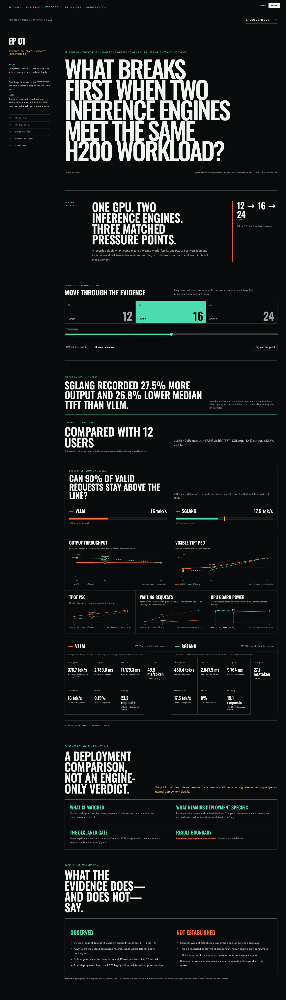

Inference Lab
Token
by Token
Measure the system.
Respect the evidence.
Episode 01 · 16 simulated users
27.5%more
output throughput.
Still below the target.
A faster aggregate did not clear the declared slow-tail decode floor.
The recorded result
More tokens.
Same failed gate.
SGLang output
480.44 tok/s
p10 decode · 17.48 tok/s
vLLM output
376.73 tok/s
p10 decode · 15.96 tok/s
Declared decode floor: p10 ≥ 20 tokens/s. Neither deployment passed at 16 users.
The dashboard keeps the boundary visible
Evidence first.
Conclusion second.
Token by Token · Episode 01

Episode 00 · equal-work warning
The same cap did not mean the same work.
Delivered work · recorded H100 study

Different delivered output lengths prevent an equal-work efficiency claim.
Public learning repository
Inspect the evidence.
Challenge the conclusion.
KVSDURGASURESH / token-by-token
github.com/KVSDURGASURESH/token-by-token
A local-first inference lab with checked-in aggregates, methodology, verification commands, and explicit limits.
EvidenceMethodologyDashboardRehearsal
Token by Token
Tested loads.
Not capacity.
Episode 00 checks the work.
Episode 01 checks the target.
github.com/KVSDURGASURESH/token-by-token
Explore the evidence